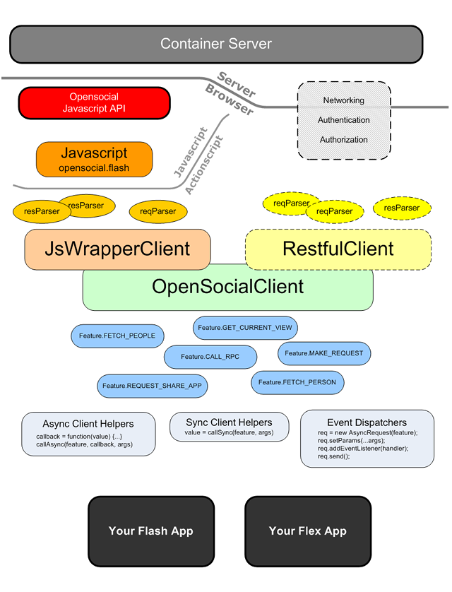

OpensocialClient class to a light weight client called JsWrapperClient and several features defined as JsFeature objects. With this structure, the client is more extensible and testable.jswrapper package is ongoing.We all believe that Flash is a good thing. This is a client SDK to make Opensocial API used in ActionScript 3.0 for Flash or Flex Apps. It's called OACS for short.
The SDK is planned to have two parts: The Javascript Wrapper Client and the RESTful Client. See the graph blow for the whole SDK structure.

Currently only the Javascript Wrapper Client is included in the current version, which is based on the 0.8 API reference.
The RESTful client is still in the designing stage. It will be based on RESTful Protocol or RPC Protocol without javascripts. There are some auth issues. Hope we could work it out soon.
If you are interested, please join this group and discuss.
We are preparing some sample apps for tutorial. But right now you can simply follow these steps and consult the api reference.
Checkout the source codes and include those packages in your flash project.
First please read the SampleApp codes. The SampleApp is a simple app that just illustrates several OpenSocial features. It is written in both Flex 3 style and Adobe Flash CS3 style for your flavors. Note that the former one is illustrating how to use helpers and the latter is illustrating how to use event dispatchers.
Start your project by copying some code snippet from SampleApp.
Use the JsWrapperClient object and some helper instance (e.g. OpenSocialHelper, GadgetsHelper) or event dispatchers (e.g. OpensocialDatRequest, RpcRequest or RpcService) to due with OpenSocial data or Rpc operations and fill your app with social functionalities. See SampleApp to learn how it works, and the reference for this SDK is also your friend.
Build your project to a SWF file. You can either use Flex 3 or Adobe Flash CS3 IDE.
Take the spec XML listed below and edit it in your case, or use the SampleApp.xml codes if you want to bypass the container cache when you are debugging. Then upload the spec, swf file together with the opensocial-flashsdk.js file to somewhere publicly accessible. And you app are done.
<?xml version="1.0" encoding="UTF-8" ?>
<Module>
<ModulePrefs title="Your App Name">
<Require feature="flash"/>
<Require feature="views"/>
<Require feature="dynamic-height"/>
<Require feature="opensocial-0.8"/>
</ModulePrefs>
<Content type="html">
<![CDATA[
<!-- The JS-Side javascript code lib used in the Flash API. -->
<script src="http://some-where/opensocial-flashsdk.js" type="text/javascript"></script>
<!-- The flash element -->
<div id="flashcontainer" style="text-align: center;"></div>
<!-- Embed the swf file -->
<script type="text/javascript">
opensocial.flash.embedFlash(
"http://some-where/yourfile.swf",
"flashcontainer", "9", {
quality: "high",
wmode: "window",
allowScriptAccess: "always"
});
gadgets.window.adjustHeight();
</script>
]]>
</Content>
</Module>
Try your app on some containers like orkut.com, xiaonei.com, 51.com, opensocial.org, and many many others ...
This SDK is coming more and more stable after 2 milestones. Please come and join us to shape these codes to make it better.
Key things that are still missing:
Unittests. Half done.
Tutorial and Reference Game.
The RESTful part of the client.